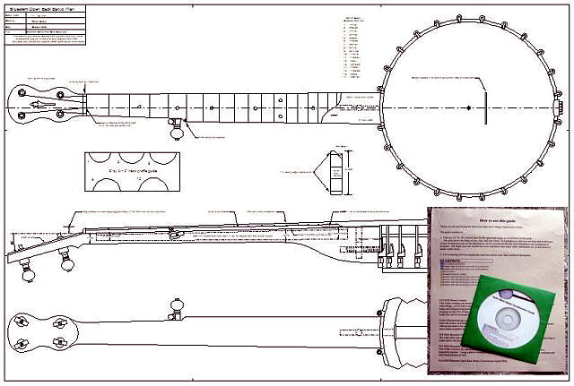

Select your area of interest:
Home* Lap Steel* 3 String Guitar* "Regular" Guitar* Violin* Bass*Banjo* Mandolin* Ukulele* Home Recording* Links
Open Back Banjo:
Traditional & progressive design & construction information
Boucher Early Minstrel Banjo (construction guide on CD & full size plan available)Frank Profitt Mountain Banjo
Bluestem Mountain Banjo Nouveau
Bluestem Artisan Mountain Banjo
Bluestem Open Back Banjo Nouveau
Bluestem Wine Box / Hand Drum Banjo
Open Back Banjo Design Primer
General Banjo Construction Information
Open Back Banjo Setup Guide
“Why can’t I get this thing to play in tune?” (more than you wanted to know about equal temperament)
Bluestem Open Back Banjo (construction guide on CD & full size plan available)
Bluestem Workingpersons 11 Slot Head Open Back Banjo (construction guide on CD & full size plan available)
Bluestem Wood Top Banjo Information (full size plan available)
*****************************************
Bluestem Open Back Banjo Construction Guide on CD with full size plan!
The guide is currently priced at $25 with first class US post office shipping included within the United States, the cost is $30 to locations outside of the United States. Your purchase allows me to pay for the tremendous bandwidth and usage this site gets without the need to sell advertisement space.Paypal:
Please e-mail me with "Bluestem Info Request" in the subject line if you are interested in purchasing one of the guide packages by check or postal money order. I accept payment in any form you wish, although personal checks take an additional 10 days to clear my bank before the guide is shipped.Bluestem Open Back Banjo Construction Guide consists of:
- Open Back Banjo Guide full size 24” by 36” printed plan
- “How to use this CD guide” printed instructions
- CD-ROM with 630 annotated pictures, related video clips, accompanying docs, pdfs, and audio files
- The current version of the entire Bluestemstrings.com website for off line use

"Why would you want to build your own instrument?"
I've been building most of what I play for over 30 years now. I started my journey into instrument construction when I began to desire a really good acoustic guitar but lacked the funds to purchase one. I considered my options and after much deliberation I decided that DIY might be a good option for me. I realized that putting my sweat equity into making one would greatly offset the total cost. I possessed the mechanical aptitude for the job, and realized that somewhere in a far-off factory someone just like me was actually responsible for building the object of my desire. So off I went for schooling. Not literally, but I did what I could in the days before the internet and purchased a book that would guide me through the process of constructing a guitar. Actually two books, everything I could find at the time! I read them cover to cover and combined techniques from the two authors to create my first guitar. Two books turned out to be a good idea as it brought me to the realization that there are multiple ways to accomplish the same task, some good and some not so good.I followed my instincts and turned out a pretty good first attempt as that guitar is still being played today. It made me realize that there is a bonding process that takes place when a musician plays an instrument that they have created that a lot of other folks don't get to experience. It brings a smile and memories back when I catch an occasional bit of aroma emanating from the sound hole on particularly humid days. I'm instantly transported back to the steam bending of the sides and forming the walnut into what would become my very own creation. That's something that no amount of money can buy.
Beyond the intrinsic connection that can be made by playing what you have made with your own hands, there are creative and economic aspects to consider. I get much joy from pushing the creative envelope to build instruments that I feel are unique and possess details that are not available anywhere else. The banjo is certainly an instrument that is somewhat frozen in a design from an earlier era and is ready for some creative input. What I come up with may not please everyone, but I'm pretty satisfied with the direction that I'm going with it.
From an economic standpoint, banjos in particular are slanted disproportionately in price by the labor involved in producing one. If you're willing to learn a little and spend time rather than money you can make a really nice instrument for about a third of what it would cost to purchase one ready made. That's some serious cash, so purchasing a few specialized tools may be good economics. This would be particularly true if you already have a well-equipped workshop.
It's said that a picture is worth a thousand words. I find that to be true, as I think most people can learn visually much better than trying to discern meaning from text only. The photos and text on the CD provide details about some of the techniques I’ve developed over many years of building instruments. I wish there would have been something similar when I first started building instruments, but there were few resources available other than a few books on guitar or violin family instrument construction, and the web was still several years in the future. That's why I'm putting out this Open Back Banjo Construction Guide CD. I can only make so many instruments in my lifetime, so this is a way to pass on what I have learned so others can use it to increase the number of great banjos in the world.
CD contents:
- How To Use This CD Guide.doc
- Bluestem Open Back Banjo Construction Guide Notes.doc
- Bluestem Open Back Banjo Construction Picture Guide.doc
- PICTURE FOLDER contains 630 captioned photos of the building process arranged in sequential order
- VIDEO FOLDER contains videos of some techniques used in the building process and a demo of the finished banjo
- AUDIO FOLDER contains a quick audio demonstration of the completed instrument in WAV and MP3 format
- WEBSITE FOLDER containing the entire Bluestemstrings.com website for off-line viewing
The following is an excerpt from the "Constructing An Open Back Banjo" guide:
INTRODUCTIONHere is an overview of the construction process of an open back 5 string banjo as shown in the pictures and outlined on the plan. The plan details a typical open back banjo using an 11” pot and a 25-1/2” scale length. These dimensions are based on what is commonly preferred by most players today, although the dimensions can be easily modified if you have personal preferences such as wider neck width at the nut, a particular scale length, or bridge position on the head.
Some details vary from the traditional design to create an instrument that avoids some of the more troublesome areas of construction. As an example, this banjo design also features a method of neck attachment that does not require a permanently attached dowel stick. This greatly simplifies any heel shaping that is necessary for initial setup or modification of the neck angle at any time in the future.
A WORD ABOUT THE DESIGN
One of my objectives was to present a banjo that could be easily copied by others without the use of a lathe. I’ve discovered that lots more folks would attempt banjo construction but don’t want to invest in a large lathe that they would not use otherwise. This particular guide makes use of a drill press and small drum sander to accomplish the majority of the rim truing operations. There are many ways to accomplish a given task and the guide as presented here serves to pass along insight on how I perform these tasks in a small shop with a minimum of equipment. If you wish to pursue lathe use or other building techniques not shown here, there are lots of banjo oriented websites with construction information that you can reference. The internet has become a tremendous resource, and the open sharing of information is one of its best attributes.
A WORD ABOUT TOOLS
I do assume that the builder will have access to a medium sized drill press.
A good drill press is at the top of my favorite tools list, which looks something like this:
1. Drill Press (like chocolate cake to me...) I use it more for planing, jointing, and sanding operations more than drilling.
2. Wagner Safe-T-Planer (used in the drill press, it’s like the butter cream icing for the cake)
3. Band saw, 12” is a good size for a small shop (you can’t conceive how useful a band saw is until you have one…)
4. Small combination 6” disk / 4” belt sander (I’ve worn out 3 of these I love ‘em so much…)
5. Vertical oscillating spindle sander (Used for heel profiling and other shaping, but other tools can be used for these tasks)
6. Small circular saw setup used to cut fret slots (Not needed for producing a few instruments, but saves me A LOT of work for the number that I produce)
Other standard tools that would commonly be found in the home shop are used for many of the tasks shown. A few other specialized hand tools such as a tapered reamer (used for 5th peg installation) are shown in use, but other common tools can be used for many of these tasks. If you follow the guide and accompanying drawing you will end up with a great open back 5 string banjo that you can be proud to say you’ve made.
Strive for perfection, learn from your mistakes, and accept and be humbled by your results.
*****************************************
Using the guide:
The “INITIAL PHOTO OVERVIEW” section contained on the CD is first printed out and used as a quick reference in selecting the desired section of captioned photos. The captioned photos contained in the folder labeled “Bluestem Open Back Banjo Construction Guide Pictures” can then be accessed by any photo viewing program to sequentially follow the construction process. There is additional text explaining some of the steps shown in the 630 captioned photos in the accompanying annotated guide to the pictorial.Here is an example from the pictorial guide showing a portion of the fret board shaping sequence as well as a view of the finished instrument.


*****************************************
Please visit my other website designed to provide information on musical instrument construction. There are free plans as well as construction tips and techniques available at the present time.
Rudy's Sketchbook of Musical Instrument Plans, Ideas, and Inspiration
If you desire to contact me about Bluestem Strings products:
Due to scoundrelous spammers actively mining sites for e-mail addresses, I'm forced to include the following text version of my e-mail address meant to confuse the automated robo-search of websites for e-mail addresses. Please e-mail me at:rcordle (substitute the at symbol here) fastmail (substitute the dot here) fm
Please include "Bluestem Info Request" in the subject line, Thanks!